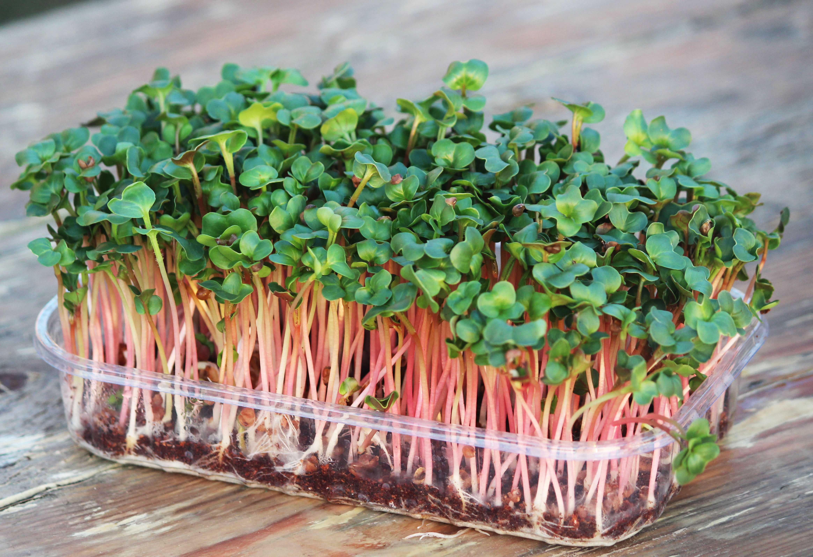

Микрозелень
Микрозелень – это молодые побеги обычных растений, чаще всего –
зелени и корнеплодов, реже – злаков. То есть следующая после проростков
стадия формирования растений. Проведя ряд исследований, ученые поведали миру
об их непревзойденных полезных свойствах. По составу микрозелень примерно
в 2–3 раза питательнее проросших семян, так как несколько недель растет в земле,
преумножая свою ценность энергией почвы, солнечными лучами и обильным поливом.

Плюсы
- Экологически чистый продукт, так как растет дома, под личным контролем
- Всегда под рукой, удобно срезать по мере надобности
- Всегда свежая и хрустящая, нет привязки к сезонам
- Полезнее и нежнее обычной зелени
- Выстро растет